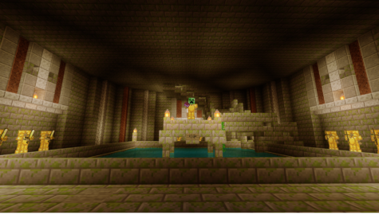
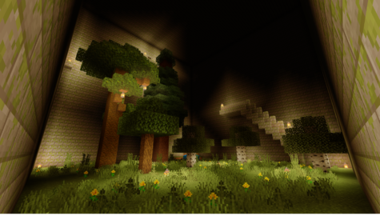
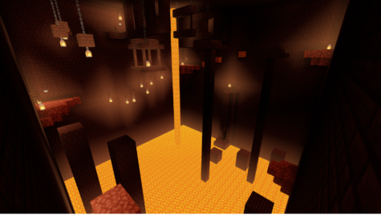

BE「謎解きアスレ」謎の古代文明と古の巨塔[Ver.1.16.x]
どうもこんにちは。Neunと申します。 コロナで暇になったので、配布ワールドを作ってみようということで本マップを制作いたしました。
この様にマップを制作して公開するのは、まだ2回目ですので色々不具合があるかもしれませんが、素人ながら頑張って作ったので是非プレイしてみて下さい！
謎解き脱出アスレですが、それぞれ救済措置があるので、謎解き脱出がしたい方もアスレがしたい方も、暇なときに気軽にどうぞ！
～謎の古代文明と古の巨塔～



【Ver.1.16.220】(Ver.1.16.xであればプレイできる可能性が高いです)
【アスレ要素あり】
【謎解き要素あり】(救済あります)
【隙間要素1ヵ所あり】(該当箇所以外は面の9割以上を触ることが出来ます)
【連ジャン必須ヵ所等あり】(救済あります)
【マルチプレイ不可】
～救済措置について～
・謎解きについて
解説·ヒント動画を制作しました。是非ご活用ください。
(前編)解説·ヒント動画
※ネタバレ防止の為、中編·後編は前編を確認の元、動画の概要欄から飛んでください。
・アスレについて
マップ随所に救済措置があります。救済措置の使い方や、救済措置を使った攻略の仕方も解説·ヒント動画にて紹介しています。是非ご活用ください。
(前編)解説·ヒント動画
※ネタバレ防止の為、中編·後編は前編を確認の元、動画の概要欄から飛んでください。
※動画を撮ったり生放送をしたりするのは全くもって構いません。
(プレイ時間は5時間前後を想定しています。)
※二次配布とかはもちろんだめです。
※バグなどが発生した場合、このサイトのコメントにて報告して頂けるととても助かります。
最新版ダウンロードはここ↓(最終更新日2021/04/20)
旧版ダウンロードはここ↓
※旧版のマイクラ対応バージョンは下記バージョン情報をご覧ください。
※テストプレイはwin版PE版のみとなっております。万が一不具合があれば申し訳ございません。
【バージョン情報】
・Ver.1.00 β版完成
・Ver.1.01 マイクラ1.16.1対応
・Ver.1.10 テストプレイ実施
・Ver.1.11 システム修正
・Ver.2.00 大幅な改築(快適さの向上)、救済措置の増設
・Ver.2.10 テストプレイ実施、チャンクバグ対策の改良
・Ver.2.11 エンディングの修正、RC版完成
・Ver.2.20 マイクラ1.16.2対応(テストプレイ済)
・Ver.2.30 マイクラ1.16.220対応(テストプレイ済)
とても楽しかった
ベルさんコメントありがとうございます！
とても励みになります！
初めましてこんにちは、楽しく遊ばせてもらっています。
現在プレイ中なのですが2階に上がり突き当たりの部屋に入ったところでコマンドブロック等が置いてある隙間に落ちてしまいました。感圧盤を踏んだ際に前後のブロックが動いてる時だと思われます！
この場合どう進めたらいいでしょうか？
hika676281さんコメントありがとうございます。
基本的に詰んだ時は/kill @sで自害して頂けると幸いです。
コメント遅れて申し訳ございません|ω•̀ )
お返事ありがとうございます。
続きも楽しく遊ばせていただきたいと思います！
>> hika676281さん
はい！また何かありましたら気軽にコメントどうぞ！(｀・ω・´)